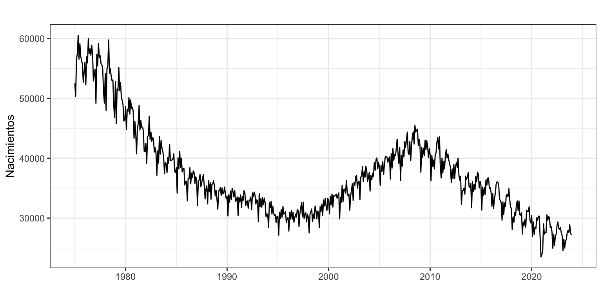
Series Temporales: Procesos Estocásticos
Máster de Bioestadística (Modelización Estadística)
1 Introducción
En este tema vamos a definir una serie de conceptos que permitirán entender mejor una serie temporal como una muestra de un proceso generador de datos (PGD). Veremos también herramientas para realizar una descriptiva de una la serie temporal (muestra) que permitirá estimar el PGD que hay detrás y así poder hacer predicciones (inferencia).
Como en el estudio de muestras transversales, la hipótesis de normalidad es conveniente, pero a esta hay que añadir las hipótesis de estacionariedad y ergodicidad.
En los temas siguientes haremos uso constante de los conceptos aquí definidos.
2 Proceso estocástico
2.1 Definición
Un proceso estocástico \(Y_t\) es (sin excesiva precisión) una variable aleatoria que corresponde a momentos sucesivos del tiempo.
Como toda variable aleatoria, su caracterización puede hacerse a través de su función de distribución o a partir de sus momentos.
- La caracterización de un proceso estocástico mediante los momentos de primer y segundo orden (medias y covarianzas) es más incompleta que cuando se hace mediante funciones de distribución.
- Bajo la hipótesis de normalidad el proceso estocástico queda completamente caracterizado a través de los dos primeros momentos.
Nosotros contamos con una sola realización del proceso estocástico \(Y_t\), la serie temporal observada \(\{y_t\}_{t=1}^T\).
- A partir de \(\{y_t\}_{t=1}^T\) estimaremos los momentos de primer y segundo orden (medias y covarianzas).
- Estos momentos nos permitirán identificar el PGD.
- Una vez identificado, estimaremos el PGD y podremos realizar inferencia (contrastes de hipótesis y predicciones).
Para que esta línea de razonamiento sea válida es necesario que el proceso sea estacionario y ergódico.
2.2 Proceso estacionario
Proceso estacionario en sentido estricto
Un proceso es estacionario en sentido estricto cuando la distribución conjunta no varía al realizar un desplazamiento en el tiempo de todas las variables.
- Si \(F(Y_{t_1},..., Y_{t_k})\) es la función de distribución conjunta y \(h>0\), entonces el proceso es estacionario en sentido estricto si \[F(Y_{t_1},..., Y_{t_k}) = F(Y_{t_1+h},..., Y_{t_k+h})\]
Intuitivamente, viendo aisladamente algunos los datos de la serie es imposible saber a que periodo temporal corresponden.
Comprobar si un proceso es estacionario en sentido estricto es muy difícil, así que vamos a encontrar condiciones suficientes: estacionariedad en media y en sentido amplio (covarianza).
Proceso estacionario en media
Un proceso es estacionario en media (o de primer orden) si su nivel se mantiene en el tiempo: \[E[Y_t] = \mu \; \; \forall t\]
Proceso estacionario en sentido amplio
Un proceso (ya estacionario en media) es estacionario en sentido amplio, o de segundo orden, si sus momentos de orden dos no dependen del tiempo:
- La (auto)covarianza entre dos periodos de tiempo es finita y sólo depende del intervalo de tiempo transcurrido entre estos dos periodos: \[Cov[Y_t, Y_{t+k}] = E[(Y_t - \mu)(Y_{t+k} - \mu)] = \gamma_k,\,\,\,\forall t\]
Observa que la varianza será entonces \(Var[Y_t] = E[(Y_t - \mu)^2] = \gamma_0\).
Si en el contexto de series temporales la autocovarianza la interpretamos como la información de la serie que se transmite entre dos periodos de tiempo \(t\) y \(t'\), el supuesto de estacionariedad en sentido amplio nos dice que la información transmitida solo depende de la distancia temporal entre los dos periodos \(t - t'\) y no los periodos en si mismos. Por ejemplo, los nacimientos en enero de un año me dan información sobre los nacimientos en enero del año siguiente, y esta información es la misma e independiente del año en consideración. Además, la información transmitida entre dos eneros consecutivos es la misma que entre dos febreros o dos marzos consecutivos porque la distancia es la misma, 12 meses.
La Figura 1 muestra la serie Nacimientos que no es estacionaria ni en media, ni en varianza. No lo es en media por que presenta tendencia y, por tanto, el valor medio de la serie cambia en el tiempo; y no es estacionaria en varianza por que al inicio de la serie los datos presenta más variabilidad que a finales del siglo pasado.
Un proceso estacionario en sentido estricto también es estacionario en sentido amplio, pero lo contrario no es cierto. Ahora bien, bajo normalidad un proceso estacionario en sentido amplio también lo será en sentido estricto.
2.3 Proceso ergódico
En el tema siguiente se verá que la estimación de los momentos de primer y segundo orden de la serie temporal permite identificar y estimar el PGD.
Para que la estimación de los momentos sea consistente el proceso debe ser ergódico: \[\lim_{T\rightarrow \infty} Var(\frac{1}{T}\sum_{t=1}^T Y_t)=0. \]
Para que un proceso sea ergódico las observaciones nuevas tienen que aportar suficiente información para que la varianza del valor medio converja a 0. Esto no ocurre si la dependencia entre las variables es muy fuerte.
Una condición necesaria pero no suficiente para que un proceso estacionario sea ergódico es:
\[\lim_{k\rightarrow \infty} \gamma_k = 0.\] Es decir, que cuanto más distancia hay entre dos periodos, menos información se transmite. Alternativamente, que el pasado cada vez ayuda menos a entender el presente.
2.4 Normalidad
Asumiremos que el error del modelo se distribuye como una variable aleatoria normal. Esta hipótesis se puede relajar si la serie tiene suficientes datos.
3 Transformaciones de una serie
3.1 Ideas generales
Una serie temporal \(\{y_t\}_{t=1}^T\) no tiene porque verificar las condiciones de estacionariedad, ergodicidad y normalidad.
A continuación, veremos una serie de transformaciones que convierten una serie no estacionaria en estacionaria; no ergódica en ergódica; y, de paso, facilitan la verificación de la hipótesis de normalidad, que dejaremos para más adelante.
En el panel superior de la Figura 2 vuelves a tener la serie de nacimientos, que denominaremos \(y_t\); en el segundo panel la diferencia de la serie, \(y_t - y_{t-1}\); y en el panel inferior tienes la diferencia de la transformación logarítmica de la serie, \(log(y_t) - log(y_{t-1})\). La serie nacimientos no es estacionaria en media ni en varianza, su diferencia es estacionaria en media, pero no en varianza. Sin embargo, la transformación logarítmica y la diferencia han logrado que sea estacionaria en ambos sentidos.
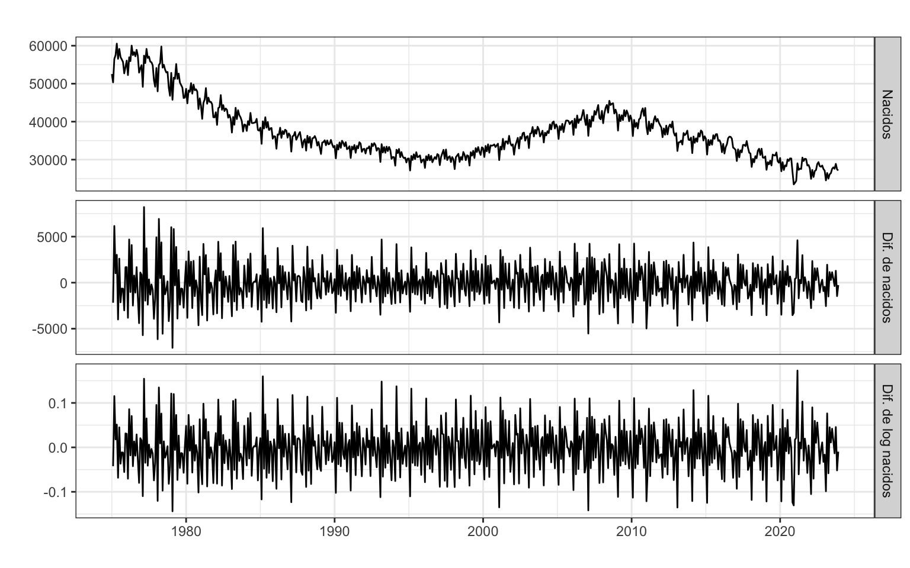
3.2 Diferenciación
La diferenciación permite transformar una serie no estacionaria en media en estacionaria en media.
Diferenciar de orden \(k\) consiste en restar a la observación de un periodo la de \(k\) periodos antes: \[\nabla_k y_t = y_t - y_{t-k}.\]
Diferenciación regular (\(k=1\))
Un caso concreto es la diferenciación regular o diferenciación de orden uno, que consiste en restar a la observación de un periodo la del periodo precedente:
\[\nabla y_t = y_t - y_{t-1}.\]
Si \(\nabla y_t\) no fuera estacionaria, se diferenciaría (regularmente) una segunda vez para obtener una doble diferenciación de primer orden:
\[\nabla^{2} y_t = \nabla(\nabla y_t) = \nabla y_t - \nabla y_{t-1} = (y_t - y_{t-1}) - (y_{t-1} - y_{t-2}) = y_t - 2y_{t-1} + y_{t-2}\]
En la práctica una sola diferenciación suele ser suficiente para obtener la estacionariedad en media; diferenciar dos veces es excepcional; y diferenciar tres o más veces no se da.
Además, en series sin estacionalidad la diferenciación también permite alcanzar la ergodicidad.
Diferenciación estacional (\(k=m\))
La diferencia estacional consiste en restar a la observación de un periodo la observación precedente de la misma estación. Si el orden estacional es \(m\), entonces la diferencia estacional de \(y_t\) es
\[\nabla_m y_t = y_t - y_{t-m}.\]
Una serie no estacionaria en media puede pasar a serlo tras diferenciarla estacionalmente. Es general, cualquiera de las dos diferenciaciones vistas (regular o estacional) o ambas a la vez son alternativas para obtener la estacionariedad.
Además, la diferenciación (regular, estacional o ambas) también permite alcanzar la ergodicidad.
La Figura 3 muestra un ejemplo de diferenciación regular y/o estacional. En el primer panel aparece la serie original Nacimientos \(y_t\); el segundo panel muestra la serie diferenciada regularmente \(\nabla y_t\); en el tercer panel la serie diferenciada estacionalmente \(\nabla_{12} y_t\); y en el cuarto panel muestra la serie diferenciada regular y estacionalmente \(\nabla\nabla_{12} y_t\).
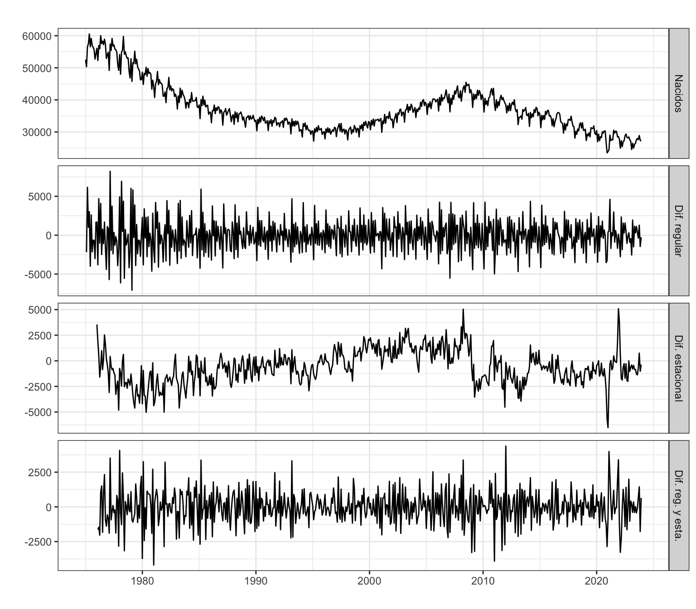
¿Qué transformación para nacimientos consideras que genera una serie estacionaria, tanto en media como en varianza? Siempre hay un cierto grado de subjetividad en la elección de las diferencias que hay que aplicar a una serie. En la figura 4 podemos considerar que la diferenciación regular (panel 2) es suficiente para lograr la estacionariedad en media y en varianza y terminar el proceso de diferenciación. Pero también podemos considerar que la serie es estacionaria en media pero no en varianza, y optar por la doble diferenciación, regular y estacional (panel 4). Existen contrastes para ayudarnos en esta decisión (véase epígrafe 5), pero la conclusión puede depender el tipo de contraste elegido o de ciertos parámetros técnicos usados en los contrastes. Muchas veces la decisión final se realiza durante el proceso de modelización o simplemente se opta por la que mejores predicciones genere.
Diferenciación con R
R dispone de la función diff para diferenciar una serie:
diff(x, lag = k)calcula la diferencia de orden \(k\), \(\nabla_k y_t\)diff(x)calcula la diferencia regular o de orden \(1\), \(\nabla y_t\) (el valor por defecto delages 1)diff(x, difference = d)calcula \(d\) diferencias regulares, \(\nabla^d y_t\)diff(x, lag = m)calcula una diferencia estacional, \(\nabla_m y_t\)
Si necesitas calcular una diferencia regular y otra estacional, \(\nabla\nabla_m y_t\), debes usar diff(diff(x, lag = m)). El orden de las diferenciaciones no cambia el resultado.
Además, en forecast están disponibles las funciones ndiffs y nsdiffs que estiman, respectivamente, el número de diferencias regulares y estacionales necesarias. En el primer caso se usa un contraste de raíces unitarias (epígrafe 5) y en el segundo un criterio ad-hoc.
ndiffs(nacimientos)[1] 1nsdiffs(nacimientos)[1] 1Para nacimientos estas dos funciones sugieren la doble diferenciación regular y estacional. La doble diferenciación es muy usual.
3.3 Transformación de Box-Cox
En el tema 2 vimos el argumento lambda, que fijado a 0 indicaba que había que transformar la serie logarítmicamente. Veamos en detalle que hay detrás de este argumento.
Transformación logarítmica
Si la serie original no es estacionaria en varianza porque los datos crecen con el nivel de la serie, es posible obtener la estacionariedad por medio de transformaciones simples.
La transformación logarítmica de una serie es una alternativa. La Figura 4 muestra la serie Nacimientos y su logaritmo. La variabilidad estacional con la transformación logarítmica (panel segundo) es menor que en la serie original (panel superior).
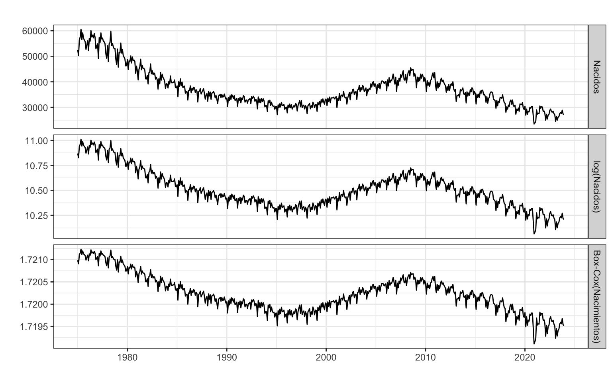
Box-Cox
La transformación logarítmica es un caso concreto de otra más general, la transformación de Box-Cox: \[ z_t = \begin{cases} (y_t^{\lambda}-1)/\lambda & \,\,\,\lambda \neq 0 \\ \log(y_t) & \,\,\, \lambda = 0 \end{cases} \]
Se puede demostrar que \(\lim_{\lambda \rightarrow 0} \;\; (y_t^{\lambda}-1)/\lambda = log(y_t)\).
Transformación de Box-Cox con R
R dispone de una serie de funciones en el paquete forecast que nos facilitan el uso de la transformación de Box-Cox:
BoxCox(y, lambda)realiza la transformación Box-Cox para un valor de \(\lambda\) determinado.InvBoxCox(z, lambda)realiza la transformación inversaBoxCox.lambda(y)calcula el valor de \(\lambda\) más adecuado. Usahelppara saber más sobre los métodos de estimación de \(\lambda\).
Para la serie Nacimientos el valor óptimo de \(\lambda\) es:
BoxCox.lambda(nacimientos) [1] -0.08823508En la Figura 4, el panel inferior muestra la transformación óptima de Box-Cox para Nacimientos usado el valor \(\lambda= -0.09\). Por un lado, el valor obtenido es muy cercano a cero. Por otro lado, no hay grandes diferencias (al menos visuales) entre el resultado de la transformación logarítmica y el resultado de la transformación de Box-Cox con \(\lambda= -0.09\). Finalmente, ¿qué interpretación tiene \((nacimientos_t^{-0.09}-1)/(-0.09)\)? En general, y con independencia del resultado de la transformación óptima, se opta por la transformación logarítmica por ser más sencilla y sobre todo más interpretable.
Por último, ten presente que si se estima y predice una serie transformada, luego hay que deshacer la transformación para obtener la predicción de la serie original.
El argumento lambda que hemos usado en algunas funciones de la librería forecast hace referencia al parámetro \(\lambda\) de la transformación Box-Cox. Siempre lo hemos fijado a cero, indicando la transformación logarítmica.
3.4 Diferencia, Logaritmo y Tasa de variación
La transformación \(\nabla y_t\) se puede interpretar como variaciones en nivel. Sin embargo, cuando una serie tiene que ser diferenciada para conseguir su estacionariedad, vale la pena probar una transformación alternativa que también es interpretable: \(\nabla \log(y_t)\).
Para la diferencia regular se tiene que, \[\nabla \log(y_t) = \log(y_t) - \log(y_{t-1}) = \log\big(\frac{y_t}{y_{t-1}} \big) \approx \frac{y_t}{y_{t-1}} - 1 = \frac{y_t - y_{t-1}}{y_{t-1}} =TV y_t.\]
Es decir, la diferencia regular del logaritmo (natural) es la Tasa de Variación de la serie, que tiene una clara interpretación como variación porcentual. Por ejemplo, para una serie anual la diferencia regular del logaritmo (natural) es la Tasa de Variación Anual de la serie \((\nabla \log(y_t)=TVA y_t)\); y para una serie mensual la diferencia regular del logaritmo (natural) es la Tasa de Variación Mensual de la serie \((\nabla \log(y_t)=TVM y_t)\).
Para la diferencia estacional se tiene que, \[\nabla_m \log(y_t) \approx \frac{y_t - y_{t-m}}{y_{t-m}} =TV_m y_t.\]
Es decir, para una serie mensual la diferencia estacional del logaritmo es la Tasa de Variación Anual de la serie \((\nabla_{12} \log(y_t)=TVA y_t)\); y para una serie diaria la diferencia estacional del logaritmo es la Tasa de Variación Semanal de la serie \((\nabla_{7} \log(y_t)=TVS y_t)\).
Cuando una serie tiene que ser diferenciada tanto regular como estacionalmente para conseguir su estacionariedad también vale la pena usar la transformación logarítmica para ganar en interpretabilidad. Es decir, frente a \(\nabla \nabla_m y_t\) es preferible usar \(\nabla \nabla_m \log(y_t)\). Así, podemos escribir
\[\nabla_m \nabla \log(y_t) = \nabla_m TV y_t = TV y_t - TV y_{t-m},\] que para una serie mensual se puede interpretar como una diferencia estacional de tasas mensuales \(TVM y_t - TVM y_{t-12}\). Es decir, como cambia de año en año la tasa de variación mensual.
También podemos escribir
\[\nabla \nabla_m \log(y_t) = \nabla TV_m y_t = TV_m y_t - TV_m y_{t-1},\]
que para una serie mensual se puede interpretar como una diferencia regular de tasas anuales \(TVA y_t - TVA y_{t-1}\). Es decir, Es decir, como cambia de mes en mes la tasa de variación anual.
La Figura 5 muestra para la serie Nacimientos la serie original (panel superior), las tasas de variación mensual y anual (paneles dos y tres, respectivamente) y la doble diferencia regular y estacional del logaritmo de nacimientos (panel inferior). Parece que la tasa de variación mensual de los nacimientos y la doble diferencia son, de todas las transformaciones probadas en este epígrafe, las series más estacionarias en media y varianza.
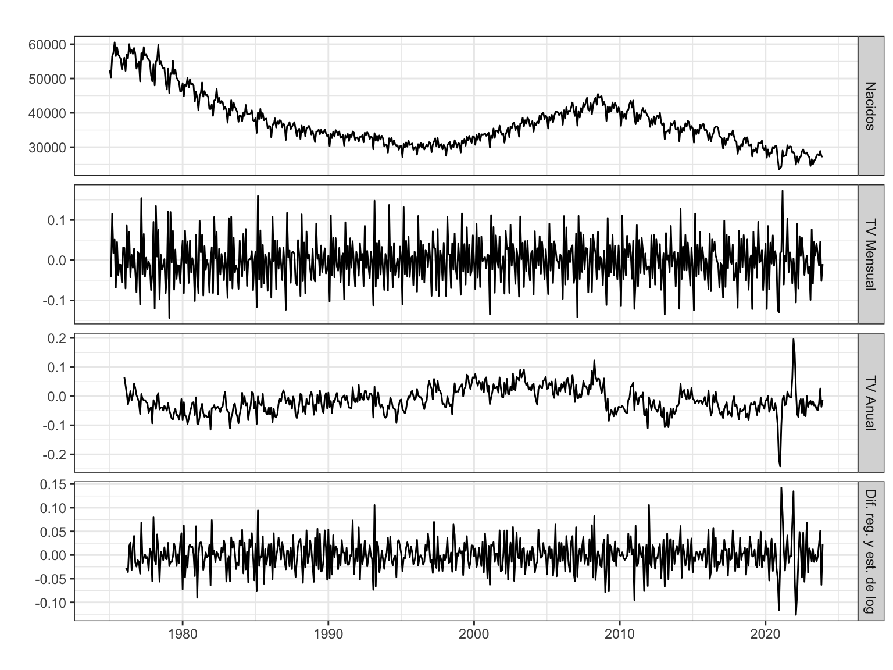
La diferenciacion y el logaritmo
Si se tiene una serie sin estacionalidad y no estacionaria, bastará diferenciarla regularmente una o, a lo sumo, dos veces para que sea estacionaria en media, en sentido amplio y ergódica.
Si se tiene una serie con estacionalidad y no estacionaria, lo usual es tener que diferenciarla una vez (regular o estacionalmente) o aplicar ambas diferenciaciones para que sea estacionaria en media, en sentido amplio y ergódica.
En ambos casos, la transformación logarítmica se puede usar para ganar en interpretabilidad o para intentar mejorar las predicciones.
La transformación logarítmica no es necesaria para alcanzar la estacionariedad de la serie.
4 Funciones de autocorrelación y autocorrelación parcial
4.1 Función de autocorrelación
Ya hemos indicado que bajo ciertas hipótesis los momentos primero y segundo de la serie caracterizan perfectamente el proceso estocástico. En el contexto de series temporales, si se da la estacionariedad en media, el primer momento de la serie es constante y, por tanto, no informativo. Son los segundos momentos de la serie (covarianzas) los que caracterizan el proceso estocástico.
Recordemos que \(\gamma_k=Cov(y_t,y_{t-k})\) es la autocovarianza de orden k. Por tanto \(\gamma_0\) es la varianza de la serie \(y_t\). Sea \(\rho_k\) la autocorrelación se orden \(k\). Se puede verificar que: \[\rho_k = cor(y_t, y_{t-k}) =\frac{\gamma_k}{\gamma_0}.\]
- \(\rho_1\) mide la información que se transmite de un periodo al siguiente periodo.
- \(\rho_k\) mide la información que se transmite k periodos hacia adelante.
Las autocorrelaciones caracterizan el proceso estocástico, y la función de autocorrelación o correlograma (FAC, o ACF en inglés) es el gráfico de \(r_k\) contra \(k\), donde \(r_k\) es la estimación de \(\rho_k\) obtenida con las observaciones.
La Figura 6 muestra la FAC para la serie Nacimientos y algunas de sus transformaciones. Observa el uso del argumento lag, que en la función ggAcf indica el orden máximo de la autocorrelación mostrada en el gráfico. La primera columna muestra la FAC para Nacimientos y varias diferenciaciones, mientras que la segunda columna muestra la FAC para el logaritmo de los nacimientos y sus diferenciaciones. Se puede observar que:
- la FAC de una serie y su transformación logarítmica es muy similar.
- En los paneles de la primera y tercera fila las autocorrelaciones decrecen muy lentamente. Este es un claro indicativo de que la serie analizada no es estacionaria ni ergódica.
- En los paneles de la segunda fila las autocorrelaciones de orden estacional (12, 24,…) también decrecen lentamente, indicando que la serie analizada no es ergódica.
- Solo la doble diferenciación regular y estacional de la serie (original o su logaritmo) muestran un rápido descenso en los coeficiente de autocorrelación (paneles de la última fila), indicando que la serie transformada es estacionaria en media y ergódica.
ggAcf(nacimientos, lag = 48)
ggAcf(log(nacimientos), lag = 48)
ggAcf(diff(nacimientos), lag = 48)
ggAcf(diff(log(nacimientos)), lag = 48)
ggAcf(diff(nacimientos, lag = 12),lag = 48)
ggAcf(diff(log(nacimientos), lag = 12), lag = 48)
ggAcf(diff(diff(nacimientos, lag=12)), lag = 48)
ggAcf(diff(diff(log(nacimientos), lag=12)), lag = 48)
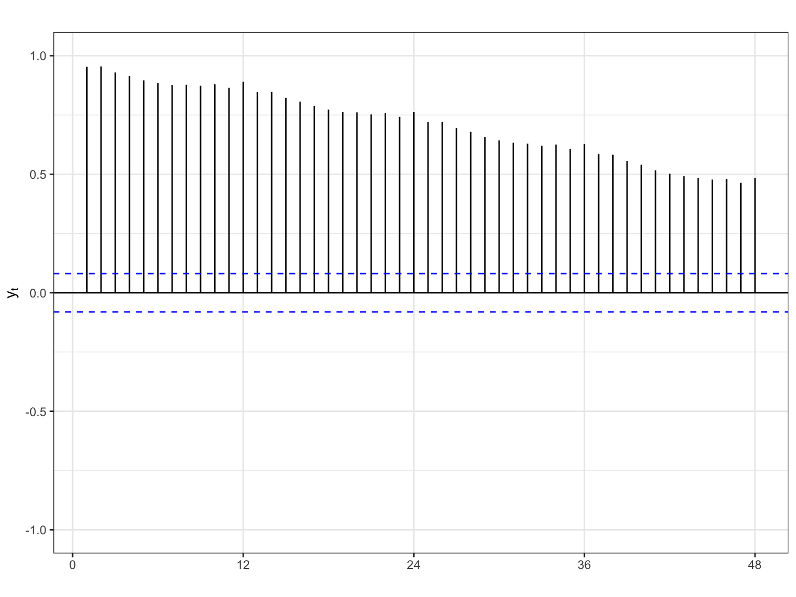
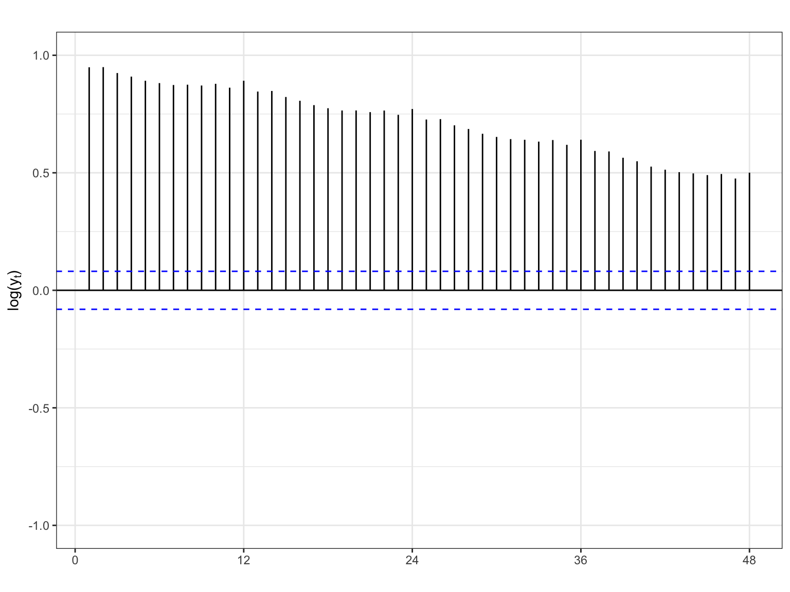
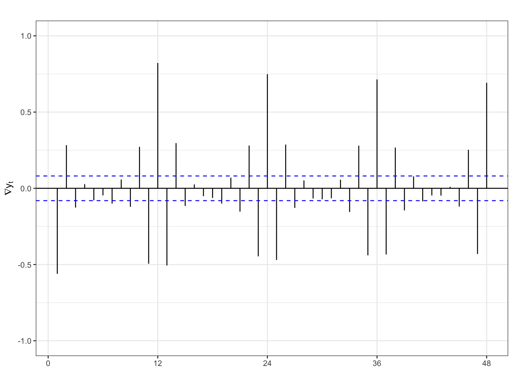
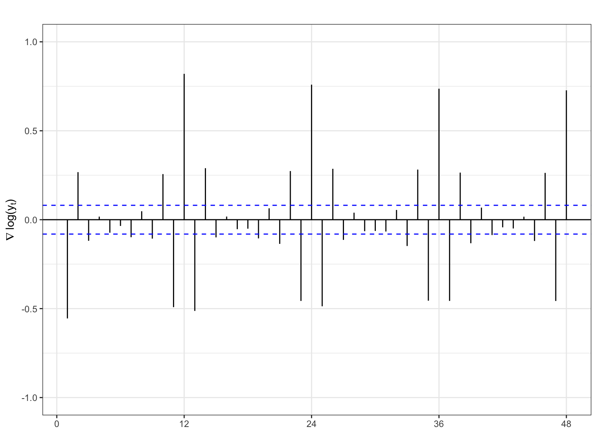
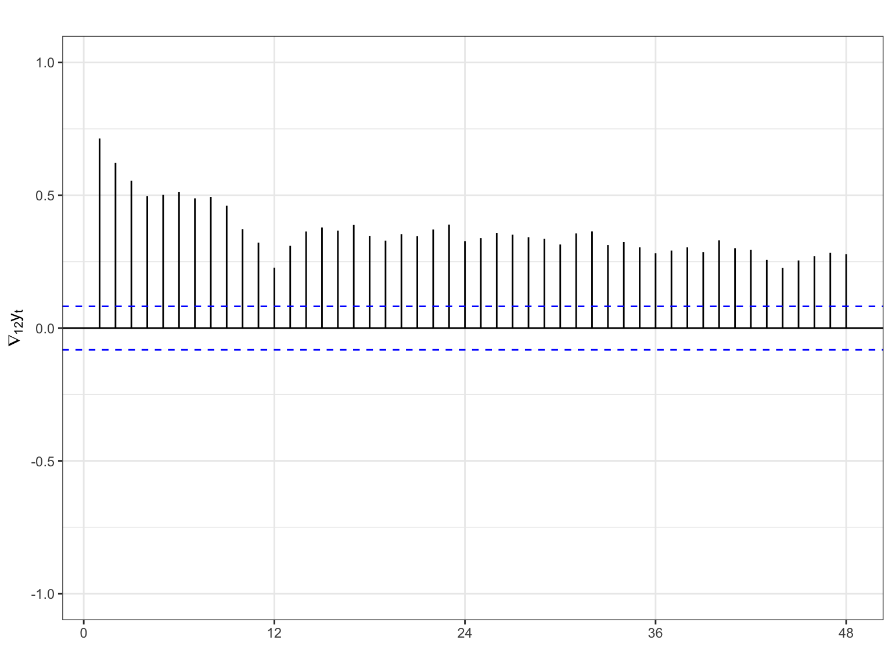
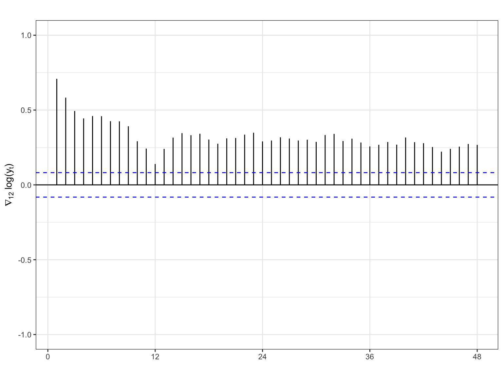
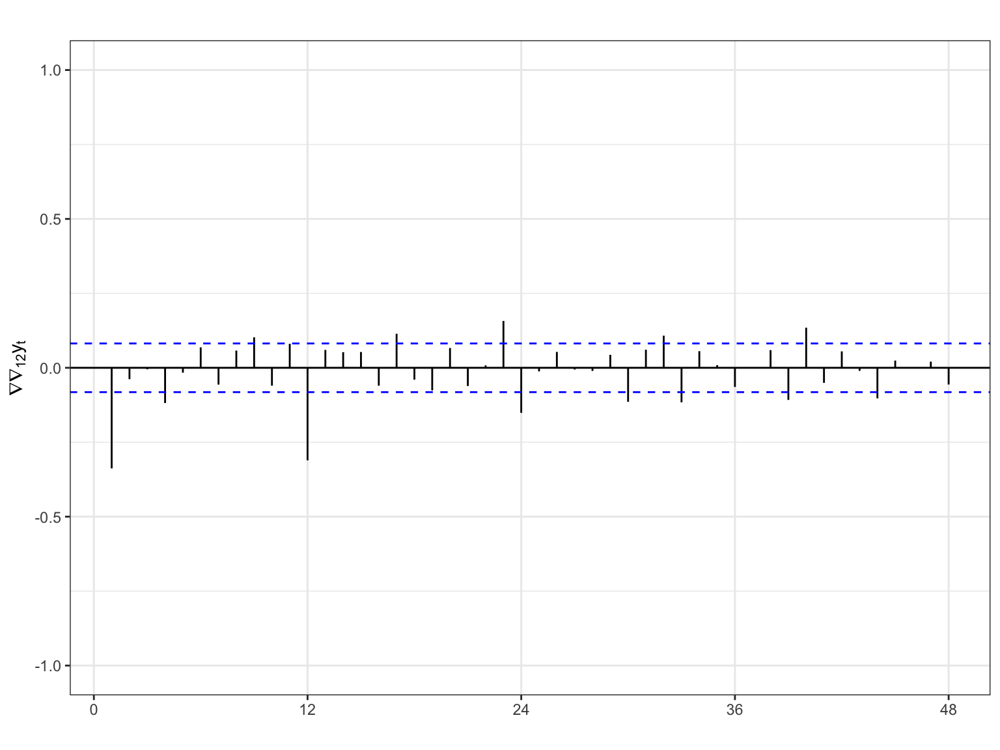
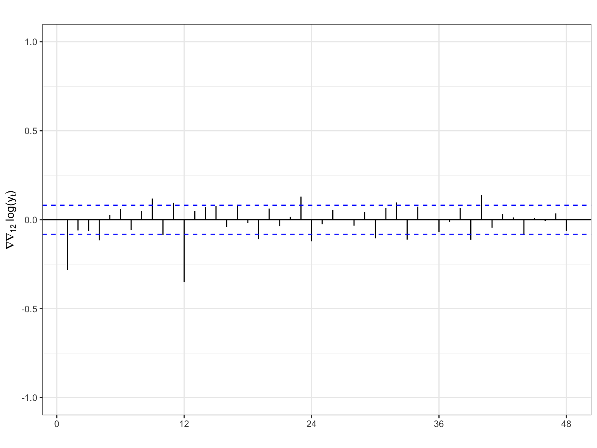
Las bandas azules de la FAC muestran el intervalo de confianza al 95% (IC95). Si \(\rho_k = 0\), la distribución del estimador \(r_k\) se distribuye aproximadamente como una normal de media \(-1/T\) y varianza \(1/T\). Las líneas punteadas de la FAC están dibujadas en las posiciones \(\frac{-1}{T} \pm \frac{1.96}{\sqrt{T}}\).
Si un \(r_k\) cae fuera del IC95 hay evidencia para rechazar la hipótesis nula de que \(\rho_k = 0\) a un nivel del 5%. Recordemos que incluso si todos los \(\rho_k\) son cero, cabe esperar que un 5% de sus estimaciones \(r_k\) caigan fuera del IC95.
Los \(\rho_k\) no son independientes. Si uno cae fuera del IC95, es más probable que los valores vecinos caigan también fuera.
Si queremos ver los valores numéricos de las autocorrelaciones debemos añadir a la función ggAfc el argumento plot = FALSE. Para la serie doblemente diferenciada vemos que la autocorrelación más elevada se da para el primer retardo (\(r_{1}=-0.338\)). El segundo valor más alto es \(r_{12} = - 0.311\).
ggAcf(diff(diff(nacimientos, lag=12)),
lag = 24,
plot = FALSE)
Autocorrelations of series 'diff(diff(nacimientos, lag = 12))', by lag
0 1 2 3 4 5 6 7 8 9 10
1.000 -0.338 -0.038 -0.005 -0.118 -0.016 0.069 -0.056 0.058 0.102 -0.060
11 12 13 14 15 16 17 18 19 20 21
0.081 -0.311 0.060 0.052 0.053 -0.060 0.114 -0.040 -0.076 0.066 -0.061
22 23 24
0.008 0.157 -0.151
4.2 Función de autocorrelación parcial
La autocorrelación parcial de orden k, \(\phi_k\), mide la información que se transmite directamente \(k\) periodos adelante, eliminada la información que se transmite a través de los periodos intermedios.
- \(\phi_1\) mide la información que de un periodo se trasmite directamente al siguiente periodo. Por tanto \(\phi_1=\rho_1\).
- \(\phi_2\) mide la información que de un periodo se trasmite 2 periodos adelante, eliminando la información que se trasmite a través del periodo intermedio.
La función de autocorrelación parcial (FACP, o PACF en inglés) es el gráfico de \(r_{k.1,2,k-1}\) contra \(k\), donde \(r_{k.1,2,k-1}\) es la estimación de \(\phi_k\) realizada con las observaciones.
La Figura 7 muestra la FACP para la serie Nacimientos y su transformación para que sean estacionarias. La FACP no permite conocer si una serie es estacionaria o ergódica.
ggPacf(nacimientos, lag = 36)
ggPacf(diff(diff(nacimientos, lag=12)), lag = 36)
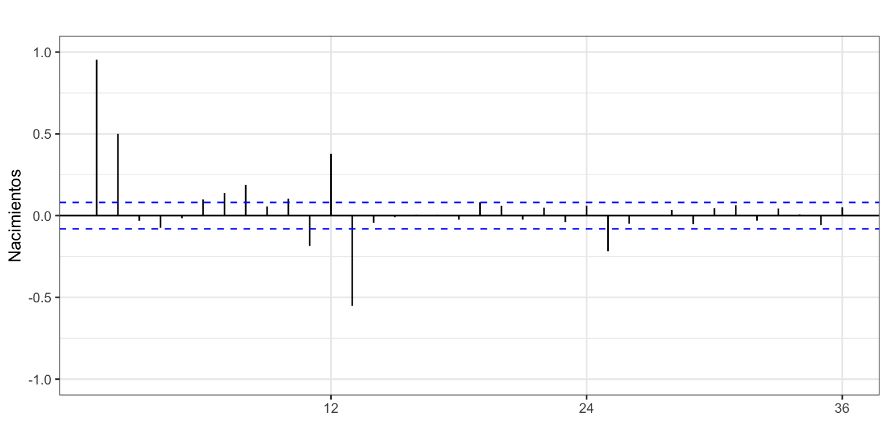
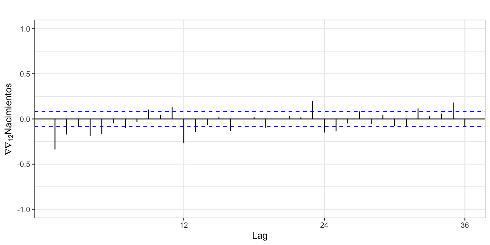
También puedes obtener directamente los valores numéricos de la FACP:
ggPacf(diff(diff(nacimientos), lag = 12), lag = 24, plot = FALSE)
Partial autocorrelations of series 'diff(diff(nacimientos), lag = 12)', by lag
1 2 3 4 5 6 7 8 9 10 11
-0.338 -0.172 -0.091 -0.187 -0.168 -0.049 -0.100 -0.032 0.104 0.043 0.133
12 13 14 15 16 17 18 19 20 21 22
-0.263 -0.149 -0.069 0.018 -0.132 -0.001 0.024 -0.097 0.003 0.035 0.017
23 24
0.197 -0.150 Las funciones tsdisplay y ggtsdisplay muestran la serie temporal, su FAC y su FACP en un único gráfico (véase Figura 8).
ggtsdisplay(diff(diff(nacimientos), lag = 12), main = "")
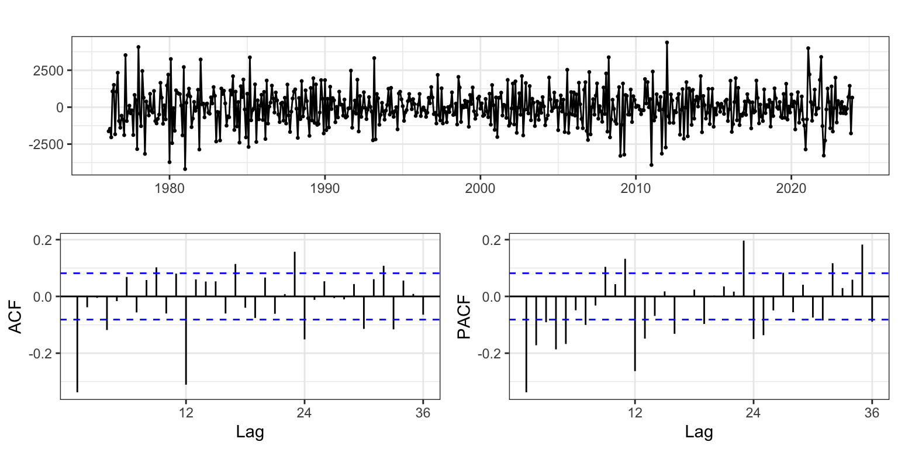
5 Raíces unitarias
5.1 Tipos de tendencia
La Figura 9 muestra tres posibles tipos de PGD (el residuo \(\varepsilon_t\) es siempre ruido blanco):
- PGD con tendencia estocástica, por ejemplo Paseo aleatorio puro,
\[y_t = y_{t-1} + \varepsilon_t = y_0 + \sum_{s=1}^t \varepsilon_s.\]
- PGD con tendencia determinista, por ejemplo Modelo lineal
\[y_t = \alpha + \mu t + \varepsilon_t.\]
- PGD con tendencia estocástica y determinista, por ejemplo Paseo aleatorio con deriva
\[y_t = \mu + y_{t-1} + \varepsilon_t = y_0 + \mu t + \sum_{s=1}^t \varepsilon_s.\]
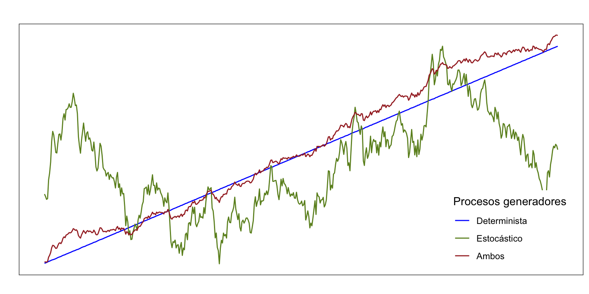
En los tres casos la serie no es estacionaria, pero es la presencia de tendencia estocástica lo que determina que el proceso tenga una raíz unitaria. Así, el paseo aleatorio puro y el paseo aleatorio con deriva presentan una raíz unitaria, pero los tres modelos tienen tendencia y deben ser diferenciados una vez para transformarlos en procesos estacionarios.
Contrastar la tendencia estocástica no es algo trivial, y la prueba es que existen múltiples contrastes para ello: Dickey-Fuller aumentado (ADF), Phillips-Perron (PP), Elliot-Rothemberg-Stock (ERS), Schmidt-Phillips (SP), Kwiatkowski-Phillips-Schmidt-Shin (KPSS), entre otros (véase Pfaff (2008)).
En muchas de las pruebas la hipótesis nula es que la serie tiene raíces unitarias (tendencia estocástica), cuando lo habitual es que la hipótesis nula sea la conservadora (en este caso que la serie no tenga tendencia estocástica). En este curso veremos la prueba de Kwiatkowski-Phillips-Schmidt-Shin que usa un contraste de Multiplicadores de Lagrange para contrastar la estacionariedad de una serie en torno a una tendencia determinista, frente a la hipótesis alternativa de existencia de una raíz unitaria. Es decir, la prueba KPSS tiene como hipótesis nula que la serie no tiene tendencia estocástica y por tanto es una prueba más conservadora que la mayoría de ellas. Sin embargo, en la prueba KPSS la ausencia de raíz unitaria no es una prueba de estacionariedad, sino de estacionariedad en torno a una tendencia determinista. Por ejemplo, el Modelo lineal no tiene una raíz unitaria (no tiene tendencia estocástica) pero no es estacionario.
También existen procesos con estacionalidad estocástica del tipo \(y_t = y_{t-m} + \varepsilon_t\), donde m es el orden estacional. Contrastar la existencia de raíces unitarias estacionales es complicado y no lo veremos en este curso (véase Ghysels, Lee, and Noh (1994)).
En lo que queda de exposición asumiremos que la serie no presenta estacionalidad.
5.2 Contraste de raíz unitaria KPSS
Teoría
Sea \(y_t\) la serie para la que queremos contrastar la existencia de raíces unitarias. Asumimos que podemos descomponer la serie en la suma de una tendencia determinista, un paseo aleatorio y una perturbación aleatoria estacionaria: \[y_t = \xi t + r_t + \varepsilon_t.\] Aquí \(r_t\) es el paseo aleatorio, \[r_t = r_{t-1} + u_t,\] donde \(u_t\) son i.i.d. \((0,\sigma_u^2)\) y el valor inicial \(r_0\) se asume fijo y tiene el papel de un intercepto o constante del modelo.
Si se cumple la hipótesis \(H_0: \sigma_u^2=0\), entonces \(u_t=0\) y \(r_t=r_0\) para todo \(t\) y la componente estocástica desaparece, quedando solo la tendencia determinista. Como el parámetro de interés es una varianza, \(H_1: \sigma_u^2>0\), es decir, es un contraste de una cola por la derecha.
- Si \(\xi=0\), entonces bajo la hipótesis nula \(y_t = r_0 + \varepsilon_t\), es decir \(y_t\) no tiene tendencia estocástica ni determinista: es estacionaria en nivel alrededor de \(r_0\) (recuerda que por hipótesis \(\varepsilon_t\) es estacionario).
- Si \(\xi \neq 0\), entonces bajo la hipótesis nula \(y_t = \xi t + r_0 + \varepsilon_t\), es decir \(y_t\) no tiene tendencia estocástica pero si determinista: es estacionaria alrededor de una tendencia determinista \(\xi t + r_0\).
- En ambos casos, si se rechaza la hipótesis nula es porque la serie tiene una raíz unitaria (tendencia estocástica) y habría que diferenciarla.
No hay que olvidar que esta prueba descansa bajo los supuestos de \(\varepsilon_t\) es estacionario y \(u_t\) i.i.d. \((0,\sigma_u^2)\).
Procedimiento de contraste
Paso 1: Se estima la ecuación \(y_t = \xi t + r_0 + \varepsilon_t\) para obtener los residuos estimados \(\widehat{\varepsilon}_t\).
Observa que este vector de residuos se puede estimar fijando \(\xi = 0\), es decir, regresando la serie \(y_t\) simplemente sobre una constante; o bajo es supuesto de que \(\xi \neq 0\), es decir, regresando la serie sobre una contante y una tendencia lineal.
Paso 2: Se definen las sumas parciales \(S_t = \sum_{i=1}^t \widehat{\varepsilon}_i\), con \(t=1,2,\ldots,T\) y se calcula \(\widehat{\sigma}^2_{\varepsilon}\).
La forma más sencilla de calcular \(\widehat{\sigma}^2_{\varepsilon}\) es \(\widehat{\sigma}^2_{\varepsilon}= \sum \widehat{\varepsilon}_t^2/T\), pero una fórmula alternativa es \(\widehat{\sigma}^2_{\varepsilon}(l) = T^{-1}\sum_{t = 1}^T \widehat{\varepsilon}_t^2 + 2T^{-1}\sum_{s=1}^l \Big[ \Big( 1 - \frac{s}{l+1} \Big) \sum_{t=s+1}^T \widehat{\varepsilon}_t \widehat{\varepsilon}_{t-s} \Big]\), que dependen el parámetro \(l\).
Paso 3: El estadístico de contraste es \(LM = \sum_{t=1}^T S_t^2/\widehat{\sigma}^2_{\varepsilon}\).
Paso 4: Fijado un nivel de significatividad, el estadístico de contraste LM es comparado con el valor crítico. Si LM es mayor que el valor crítico, se rechaza la hipótesis nula, la serie tiene raíces unitarias (tendencia estocástica) y es, por tanto, no estacionaria. Si no se rechaza la hipótesis nula, entonces la serie es estacionaria en torno a un nivel (caso \(\xi = 0\)) o a una tendencia determinista (caso \(\xi \neq 0\)).
Puedes encontrar los detalles de este contraste en Kwiatkowski et al. (1992).
Contraste KPSS en R
R proporciona dos implementaciones de esta prueba, ur.kpss en el paquete urca (que será la que usaremos) y kpss.test en el paquete tseries. En ambos casos el usuario debe decidir el valor adecuado del parámetro \(l\) para el cálculo de \(\widehat{\sigma}^2_{\varepsilon}(l)\). Como los resultados pueden depender de este parámetro, es conveniente repetir el contraste para diferentes valores.
Además, en forecast está disponible la función ndiffs que estima el número de diferencias necesarias para que una serie sea estacionaria. Por defecto la función ndiffs emplea el contraste KPSS, pero también están disponibles Dickey-Fuller y Phillips-Perron.
Los principales argumentos de la función ur.kpss son:
type, puede sertype = "mu"para contrastar la presencia de tendencia estocástica en torno a un nivel (\(\xi = 0\)); otype = "tau"para contrastar la presencia de tendencia estocástica en torno a una tendencia determinista (\(\xi \neq 0\)).lags, el valor del parámetro \(l\) en \(\widehat{\sigma}^2_{\varepsilon}(l)\). Puede ser ‘’nil’’ cuando no hay corrección (\(l=0\)); ‘’short’’ usa el valor \((4T/100)^{0.25}\); y ‘’long’’ para \((12T/100)^{0.25}\).use.lagfija un valor numérico para \(l\). (La funciónndiffsfija este valor a \(3\sqrt{T/13}\).)
5.3 Ejemplos
Ejemplo con Residuos
summary(ur.kpss(residuos,
type = "tau",
lags = "short"))
#######################
# KPSS Unit Root Test #
#######################
Test is of type: tau with 2 lags.
Value of test-statistic is: 0.1384
Critical value for a significance level of:
10pct 5pct 2.5pct 1pct
critical values 0.119 0.146 0.176 0.216En el caso en que se asume tendencia determinista, y para \(l=2\), el estadístico de contraste vale 0.138 y el valor crítico al 5% vale 0.146. Como el estadístico de contraste es menor que el valor crítico, se acepta la hipótesis nula, la serie no tiene una raíz unitaria, es decir tiene tendencia determinista, pero no tendencia determinista. Observa que al 1% no se rechaza la hipótesis nula.
summary(ur.kpss(residuos,
type = "mu",
lags = "short"))
#######################
# KPSS Unit Root Test #
#######################
Test is of type: mu with 2 lags.
Value of test-statistic is: 0.6834
Critical value for a significance level of:
10pct 5pct 2.5pct 1pct
critical values 0.347 0.463 0.574 0.739Ahora, bajo el supuesto de que no hay tendencia determinista, el estadístico de contraste vale 0.683 y el valor crítico al 5% vale 0.463. Se rechaza la hipótesis nula, la serie tiene tendencia estocástica alrededor de un nivel.
En cualquiera de los dos casos, la serie tiene tendencia, sea determinista o estocástica, así que hay que diferenciarla.
Si aplicamos el primer contraste (\(\xi \neq 0\)) para diferentes valores de \(l\) desde 1 hasta 5, los estadísticos de contraste valen:
1 2 3 4 5
0.187 0.138 0.116 0.106 0.102 En todos los casos el valor crítico al 5% sigue siendo \(0.146\). Se observa siempre se acepta la hipótesis nula, si la serie tiene tendencia determinista, no la tiene estocástica.
Si se repite este ejercicio fijando tau = "mu" (\(\xi = 0\)), se rechaza la hipótesis nula sólo para \(l \leq 3\). Ahora el estadístico de contraste es \(0.463\).
1 2 3 4 5
0.989 0.683 0.534 0.448 0.393 Si optamos por aceptar que la serie Residuos no es estacionaria y la diferenciamos una vez, debemos repetir el contraste para la serie diferenciada a fin de determinar si una diferencia es suficiente para alcanzar la estacionariedad. Esta vez, lo más conveniente es considerar que la tendencia determinista ya ha sido eliminada y fijar tau = "mu".
summary(ur.kpss(diff(residuos),
type = "mu",
lags = "short"))
#######################
# KPSS Unit Root Test #
#######################
Test is of type: mu with 2 lags.
Value of test-statistic is: 0.2761
Critical value for a significance level of:
10pct 5pct 2.5pct 1pct
critical values 0.347 0.463 0.574 0.739Otra opción es usar la función ndiffs que aplica el contraste KPSS reiteradamente para identificar el número adecuado de diferenciaciones. Esta función permite fijar el nivel de significatividad, el tipo de contraste y el tipo de tendencia determinista.
ndiffs(residuos, alpha = 0.05, test = "kpss")[1] 1También existe la función nsdiffs que identifica el número de diferenciaciones estacionales adecuado. En este caso se basa de una regla de decisión empírica, sin soporte teórico.
Ejemplo con Nacimientos (anual)
nacimientosAnual<-aggregate(nacimientos,
FUN = sum)
summary(ur.kpss(nacimientosAnual,
type = "tau",
lags = "short"))
#######################
# KPSS Unit Root Test #
#######################
Test is of type: tau with 3 lags.
Value of test-statistic is: 0.1998
Critical value for a significance level of:
10pct 5pct 2.5pct 1pct
critical values 0.119 0.146 0.176 0.216El estadístico de contraste vale 0.1998 y el valor crítico al 5% vale 0.146. Como el estadístico de contraste es mayor que el valor crítico, se rechaza la hipótesis nula, la serie tiene tendencia estocástica alrededor de una tendencia determinista, no es estacionaria.
De nuevo, aplicando el contraste para diferentes valores de \(l\) se tiene que para todos los valores de \(l\) se rechaza la hipótesis nula.
1 2 3 4 5
0.371 0.256 0.200 0.167 0.147 Si aplicamos ndiffs obtenemos que hay que diferenciar la serie dos veces para que sea estacionaria.
ndiffs(nacimientosAnual,
alpha = 0.05,
test = "kpss")[1] 2Pruebas alternativas para contraste de raíces unitarias
| Prueba | Función | Package |
|---|---|---|
| KPSS | ur.kpss |
urca |
| KPSS | kpss.test |
tseries |
| ADF | ur.df |
urca |
| ADF | adf.test |
tseries |
| ADF | adftest |
fUnitRoots |
| ADF | ADF.test |
uroot |
| PP | ur.pp |
urca |
| PP | pp.test |
tseries |
| ERS | ur.ers |
urca |
| SP | ur.sp |
urca |
6 Resumen de los comandos utilizados
| Función | Paquete | Descripción |
|---|---|---|
lag |
stats | crea una serie desfasada |
diff |
base | diferencia a serie, por defecto una vez |
ur.kpss |
urca | contraste de raíz unitaria KPSS |
ndiffs |
forecast | identifica el número necesario de diferenciaciones regulares |
nsdiffs |
forecast | identifica el número necesario de diferenciaciones estacionales |
ggAcf, ggPacf |
forecast | función de autocorrelación y autocorrelación parcial |
ggtsdisplay |
forecast | dibuja la serie, junto con su ACF y PACF |
BoxCox.lambda |
forecast | estima el parámetro de la transformación de Box-Cox más adecuado |
BoxCox |
forecast | realiza la transformación de Box-Cox |
InvBoxCox |
forecast | realiza la inversa de la transformación de Box-Cox |
References
Ghysels, Eric, Hahn S. Lee, and Jaesum Noh. 1994. “Testing for Unit Roots in Seasonal Time Series: Some Theoretical Extensions and a Monte Carlo Investigation.” Journal of Econometrics 62 (2): 415–42. https://doi.org/https://doi.org/10.1016/0304-4076(94)90030-2.
Kwiatkowski, Denis, Peter C. B. Phillips, Peter Schmidt, and Yongcheol Shin. 1992. “Testing the Null Hypothesis of Stationarity Against the Alternative of a Unit Root: How Sure Are We That Economic Time Series Have a Unit Root?” Journal of Econometrics 54 (1): 159–78. https://doi.org/https://doi.org/10.1016/0304-4076(92)90104-Y.
Pfaff, Bernhard. 2008. Analysis of Integrated and Cointegrated Time Series with r. Springer New York. https://doi.org/10.1007/978-0-387-75967-8.